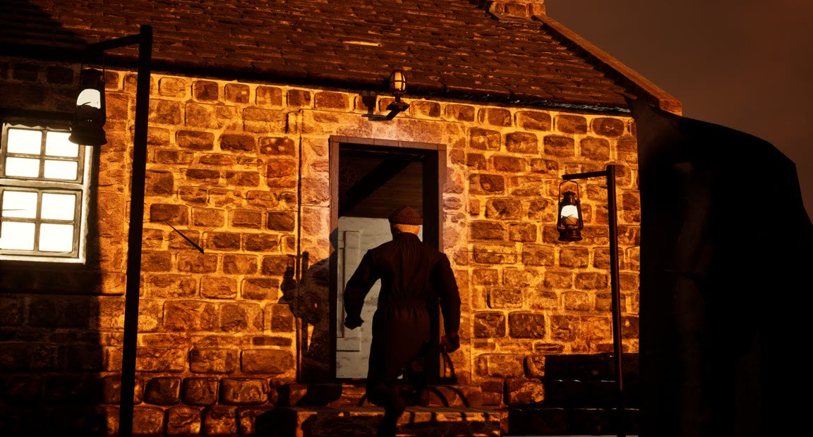
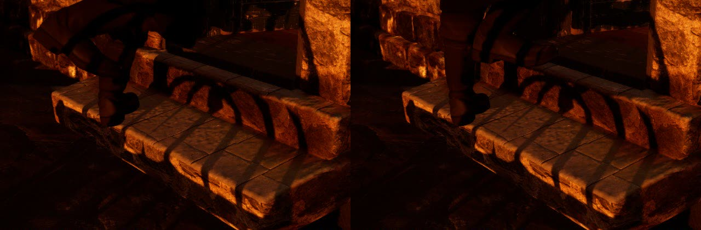

Day 3 Saturday 14 November
Watching the ending, and a keeper who moves like a tired old man
4 pictures 2 failures 11 min read
Checkpoint The keeper's generated motion on the main branch, 13:56
This entry covers Saturday from about 01:30 to 14:30. Work on the game stopped at about 03:00 and began again at about 12:50, so the work fell into two short stretches: the night's last two hours, and the first two of the afternoon. It was written at about 14:35 from the lanes' notes and the repository.
Watching the ending before anyone plays it
On Friday night no agent could record the game's sound: a game that runs off screen is muted by the engine for lack of focus, and the agents open no window on the developer's screen. By 01:45 that was solved another way. The game now films itself frame by frame, off screen, with nothing on the developer's speakers:
- the engine's fixed time step makes every frame exactly one thirtieth of a second of game time, however long the computer takes to draw it;
- the engine's non-realtime audio renderer mixes the sound in step with those frames, and the game's own recorder writes the mix to a file;
- each frame is saved as a picture, and the pictures and the sound are joined into a video afterwards.
Since the commit at 01:56, the test scripts that drive these runs follow game time too, so a script plays the same whether the run is real time or seven times slower. It is slow: 104 seconds of the ending took 12 minutes to record. But the sync is exact, and a two-minute ending can be judged as a film, with its sound, before anyone plays it. This runs the game from the editor with a test script at the controls; it is for reviewing. The entry's gameplay video will be recorded from the packaged game.
The doorstep
The developer watched the first recording of the ending and liked it. He saw one fault: on the way home the keeper slid through the hut's doorstep, his legs inside the stone.
The step was measured first, by casting rays at the hut's model in Blender: a stone tread about 35 cm above the rock, then the stone sill and the door's threshold about 22 cm higher. Rodin's animation library, listed without spending a credit, has walks, runs, idles and dances but no step up. So the fix went into the keeper's own animation code, between 02:00 and 03:00:
- One path, one pace. The walk home and the coming in are one path now, from the rock through the doorway to the projector's switch, walked at one pace without the old stop in the doorway.
- Every footfall planned. The walk clip's stride was measured from its bones: 76 cm a step. The clip's time follows the distance walked, so the feet never slide and every footfall is known before he sets out. The starting point of the stride was picked out of 200 tries so that no boot lands across an edge, with 6.8 cm to spare: left boot on the rock, right on the tread with its toe 7.5 cm back from the riser, left on the threshold, right on the floor.
- Leg IK. Each foot stands at the height of the stone under it. A rising foot lifts early and a falling one drops late, and the body rides on the lower foot, so a leg only ever bends.
- Footsteps. They now sound as each boot lands: stone outside, boards inside.
It was checked frame by frame in the new recordings, from the developer's own camera and from a raised camera beside the step, and merged at 02:42. A safety check that lifts any boot that dips into the stone was watched for in every run; it never fired.


A keeper who moves like a tired old man
Watching the ending again, the developer found the keeper's walk and the way he heaved the launcher onto his shoulder too stiff, too much like a game. The movements were Rodin's library walk and five movements our own code had posed in Blender. He wanted a tired old man.
Unreal Engine 5.9 ships an experimental plugin for this: Kimodo, Epic's front end inside the editor to NVIDIA's Kimodo motion model. It takes timed text prompts and the path a character has to walk, generates a whole-body motion on NVIDIA's own skeleton, and retargets it onto the character's rig. The work began at 12:49, and the order was:
- Read before anything ran. The plugin's Python and C++ were reviewed read-only. No telemetry, no open ports, and no code that comes with the models is run. But on its first start it would install a Python environment of several gigabytes from the internet, and fetch about 18.5 GB of weights into the user's home folder.
- Licences read at their source. Kimodo's code is Apache-2.0. The model, Kimodo-SOMA-RP-v1.1, is under the NVIDIA Open Model License: commercial use, worldwide, and NVIDIA claims no outputs. Its text encoder, Meta Llama 3 8B Instruct, is under the Meta Llama 3 Community License: the outputs are ours, and its use policy forbids passing the outputs off as made by people, so the keeper's motion is called AI-generated here, never hand-animated or motion-captured. LLM2Vec, the adapters that turn Llama 3 into a text encoder, is MIT and is treated as part of Llama 3. The SOMA skeleton is Apache-2.0. Kimodo's other published model, which is under a non-commercial licence, is never used.
- Pinned and kept in the project. Every model was fetched once, pinned by revision and SHA-256 in the project's model list, checked file by file and kept inside the project's folder. Every run since is offline, with the downloads switched off. The Python packages are installed from Epic's hash-pinned list; one package the list had missed was checked against its published hash first.
- A new PyTorch. The plugin's bundled PyTorch (2.5.1) is too old for the RTX 5090: it has no code for the card's architecture. The first takes ran on the processor, at about 130 seconds a take. At 13:31, with the developer's approval, it was replaced by the newer PyTorch the project already uses (2.14, for CUDA 13.0), with its hashes checked against the official index. A take now takes 2 to 6 seconds on the graphics card.
- A driver of our own. The plugin generates only from the editor's sequence window, with no script entry. We wrote a small editor-only driver, patterned on Epic's own generation test. It builds a sequence, puts the keeper in it, keys the timed prompts and the root path from the hut's real layout, and generates at high quality (100 diffusion steps). Then it exports the result onto the keeper's own skeleton and draws each take as a stick figure. The driver stays on a working branch: the game's main branch takes only the finished animations.
Five clips were generated, three or four seeds each, and the best take of each was chosen by measuring it and looking at it, in stick figures and in the game:
- The walk home, 11.6 seconds, along the real path from the rock over the doorstep to the projector's switch, in three timed prompts.
- Reaching up to flick the projector's switch, 3.5 seconds.
- Round the chair and sitting down in it, 8.4 seconds.
- Resting in the chair, 10 seconds.
- The launcher, for the drone's shot, 6 seconds: holding it low at his hips, heaving it onto his right shoulder, aiming and firing.
![One take of the walk home, drawn by our tools from the generated motion on the keeper's skeleton. Top: seen from above; bottom: from the side; a figure every half second, the numbers are seconds. He sets out on the right at 0.0 and stops at the projector's switch on the left at 11.6. Left limbs red, right limbs blue, the green arrow is the way he faces. The model knows nothing of the step (the path it is given is flat), so the step up happens in the game, where our own code sets each boot on the stone.](media/full/2026-11-14-1320-walk-take.jpg)
Prompt0.0 s: An exhausted old man in a heavy coat walks slowly forward, shoulders hunched, tired after a long night. 5.5 s: The tired old man…57 words
0.0 s: An exhausted old man in a heavy coat walks slowly forward, shoulders hunched, tired after a long night. 5.5 s: The tired old man steps up onto a stone step and then over a raised threshold, slow and careful. 8.5 s: The tired old man takes a few slow steps forward and stops, standing still.
In the game the generated motion is the base, and the game's own code still does what the model cannot see:
- The doorstep. The doorstep's foot planning carries over. Where a heel or the ball of a foot stands still in the clip, that boot is set on the stone under it.
- The chair. The resting take is lifted 9 cm to meet the seat the sitting take ended on.
- The recoil. It was weak in every take, so a short kick of 7 degrees is added at the shot.
- The launcher. It is carried by his body: low across his hips, then on his shoulder. His hands are put on its grips by arm IK, and his head turns aside when the tube comes close to it.
The five animations went into the main branch at 13:56. Nothing of the models ships: no weights, no text encoder and none of its cache leave this PC, and the packaged game holds neither Kimodo nor anything of its framework, only the five finished animations on the keeper's skeleton.


The rocket leaves along the tube
At 13:20 the developer pointed out a fault in the drone's shot. The tube pointed level, and the rocket left about 45 degrees above it: the code sent the rocket at the ship whatever the tube was doing. Now, in each frame before the shot, the tube's axis, as the generated clip holds it, is turned onto the ship. The turn is spread over the keeper's five spine bones and eased in over 0.8 seconds. It freezes at the shot, so the recoil shows. The rocket, its flash, its sparks and the back-blast leave along the tube's own axis. The flight leaves the muzzle straight and then bends onto the ship. In the recorded take the log puts the tube 0.1 degrees off the line to the ship.

Prompt0.0 s: An old man stands holding a heavy metal tube low in front of his hips with both hands. 0.5 s: The old man heaves the heavy tube up…97 words
0.0 s: An old man stands holding a heavy metal tube low in front of his hips with both hands. 0.5 s: The old man heaves the heavy tube up onto his right shoulder with both hands, slowly and with effort. 2.4 s: The old man holds the heavy tube on his right shoulder with both hands, aims it up at the sky and steadies himself. 3.6 s: The old man fires the heavy weapon on his right shoulder; the recoil jolts his shoulder and upper body backward, then he steadies, still holding it on his shoulder.
Still being refined
At 14:13 a new recording of the ending was finished: 163 seconds, 4,890 frames at 1920 by 1080. The frames were packed into the video in chunks while the run went on, so the drive never ran short. The developer watched it, and three things are being refined now:
- His posture on the walk. The prompts asked for hunched shoulders, and the chosen take leans far forward.
- His hands on the launcher's grips and on the chair's armrests. In some frames an arm passes through the launcher or through an armrest; those frames are not shown here.
- A new, older voice for the keeper.
Seen and left as it is: as he passes the threshold, the room's light takes him, and his coat turns from warm brown to dark blue in one frame.
The numbers since 01:26
Counted at 14:30: lines of game code went from 35,443 to 36,984, and commits from 441 to 448. Rodin jobs (135), kinds of 3D model (130), pictures from the image model (596), synthesised sound effects (275) and spoken lines (50) are unchanged: the afternoon's new motion is in five animations, not in new models.
Tools in this entry
Claude Code; Unreal Engine 5.9 and its Kimodo plugin; Kimodo-SOMA-RP-v1.1 (NVIDIA); Meta Llama 3 8B Instruct with LLM2Vec as Kimodo's text encoder, in the editor only. Built with Meta Llama 3. Blender, to measure the doorstep.